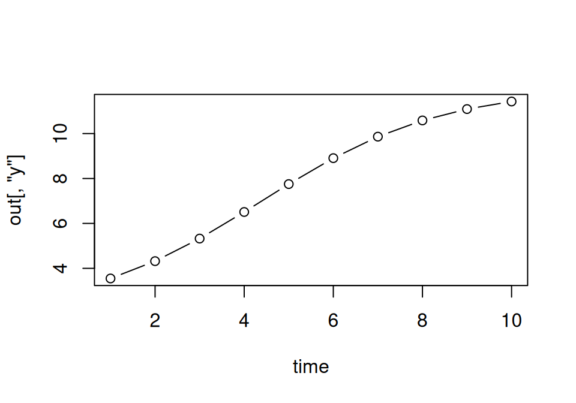
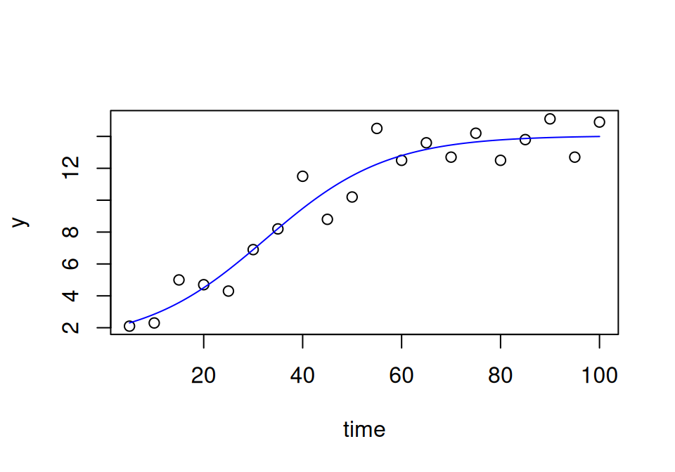
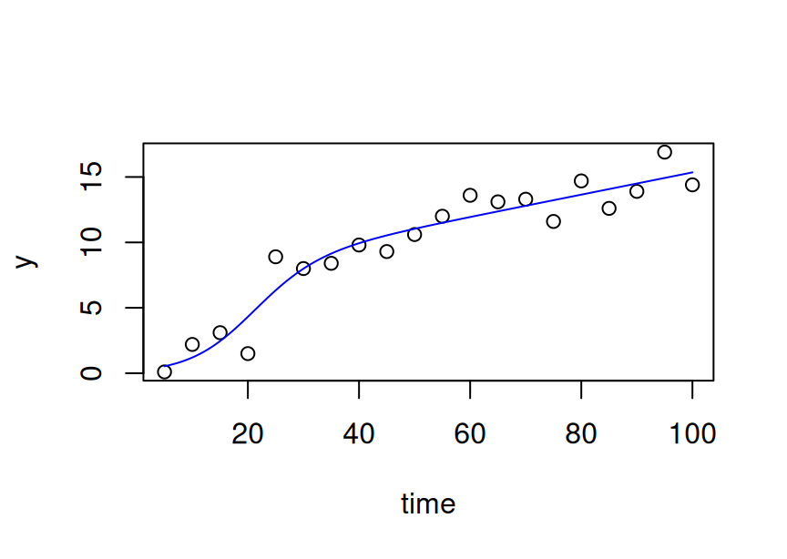

Estimation of Growth Rates with Package growthrates, Part 2: User-defined Growth Models
2026-11-21
Source:vignettes/part2-user-models.qmd
1 Introduction
Package growthrates comes with a set of built-in parametric growth models that should be sufficient for many application scenarios, though of course not under all circumstances. This document describes how the set of available functions can be extended with your own user-defined models. Section 3 describes how simple regression functions existing in closed form can be implemented. Section 4 shows how growth models defined by systems of ordinary differential equations (ODEs) can be implemented directly in R, and finally Section 5 describes how ODE models can be implemented as inline C code.
2 Differential equations or closed form?
Growth models can be either “ordinary functions” of time in closed form—allowing you to obtain values for the dependent variable immediately from any given value of an independent variable (or time) without iteration—or differential equation models that require numerical integration.
Sometimes a model can be written in either form. For example, the logistic growth model can be expressed as a differential equation:
or as its analytical solution in closed form:
The second form is much easier to evaluate because can be computed directly from , whereas the first version requires either analytical integration (yielding the second form) or numerical simulation of how evolves stepwise over time.
On the other hand, models formulated as differential equations are often more directly tied to a mechanistic process description and easier to extend.
3 Growth models in closed form
Suppose we want to extend the logistic growth model with an additional shift parameter along the -axis, for example because part of the population does not participate in growth. This leads to an equation of the form:
After loading package growthrates:
we can immediately define our own function in the user workspace without modifying the package itself. To make it compatible with growthrates, it is sufficient to follow the input and output conventions described on the ?growthmodel help page.
The function can have any valid name, provided that:
- it takes exactly two arguments,
timeandparms, as input, and - its return value is a matrix with at least two columns named
timeandy.
The body of the function can be adapted as needed, as long as the mapping between inputs and outputs makes sense from a scientific perspective.
grow_logistic_yshift <- function(time, parms) {
with(as.list(parms), {
y <- (K * y0) / (y0 + (K - y0) * exp(-mumax * time)) + y_shift
data.frame(time = time, y = y) |> as.matrix()
})
}At first glance, data.frame(time = time, y = y) |> as.matrix() may look roundabout, but it is a straightforward way to produce the required matrix format.
It is always good practice to test the function beforehand, for example:
time <- 1:10
out <- grow_logistic_yshift(time, parms = list(y0 = 1, mumax = 0.5, K = 10, y_shift = 2))
plot(time, out[, "y"], type = "b")
Future versions of growthrates may introduce additional checks, so it is already helpful to wrap the function in a constructor of the same name to create an object of class growthmodel:
grow_logistic_yshift <- growthmodel(grow_logistic_yshift,
c("y0", "mumax", "K", "y_shift"))Now the new model is ready to be fitted to test data:
x <- seq(5, 100, 5)
y <- c(2.1, 2.3, 5, 4.7, 4.3, 6.9, 8.2, 11.5, 8.8, 10.2, 14.5, 12.5,
13.6, 12.7, 14.2, 12.5, 13.8, 15.1, 12.7, 14.9)
fit <- fit_growthmodel(grow_logistic_yshift,
p = c(y0 = 1, mumax = 0.1, K = 10, y_shift = 1),
time = x, y = y)
plot(fit)
summary(fit)
Parameters:
Estimate Std. Error t value Pr(>|t|)
y0 0.86510 1.15526 0.749 0.464826
mumax 0.08134 0.02737 2.972 0.008995 **
K 12.99885 2.56970 5.059 0.000116 ***
y_shift 1.04939 2.22481 0.472 0.643528
---
Signif. codes: 0 '***' 0.001 '**' 0.01 '*' 0.05 '.' 0.1 ' ' 1
Residual standard error: 1.248 on 16 degrees of freedom
Parameter correlation:
y0 mumax K y_shift
y0 1.0000 -0.9632 0.9555 -0.9477
mumax -0.9632 1.0000 -0.8989 0.8519
K 0.9555 -0.8989 1.0000 -0.9766
y_shift -0.9477 0.8519 -0.9766 1.00004 Differential equation models in R
Differential equation models can be used in a similar way, though they are slightly more involved because:
- we need two functions: one for the ODE model (the derivatives) and one for the numerical integration;
- an ODE model distinguishes between time-dependent state variables and constant parameters, even though both are treated as parameters during statistical estimation. This distinction between statistical parameters (from the perspective of model fitting) and ODE model parameters should be kept clear; and
- numerical integration is a broad topic that requires care and experience. A concise overview can be found in Soetaert et al. (2010).
In the example below, we assume that the carrying capacity is a function of time. This can be represented by a system of two differential equations—one for the carrying capacity () and one for population abundance (). For simplicity, we assume a linear increase in , though more elaborate formulations are certainly possible, such as biochemical conversion of a mixed substrate, Monod kinetics on a limiting resource, density dependence, or semi-continuous nutrient additions.
The growth model consists of two parts:
- a function
ode_...defining the differential equations, and - a growth model
grow_...computing the numerical solution.
In the latter, the statistical parameters are split into initial values for the state variables (init) and the ODE model parameters. We also need to keep initial values (such as ) distinct from the state variables (such as ) that evolve over time.
ode_K_linear <- function(time, init, parms, ...) {
with(as.list(c(parms, init)), {
dy <- mumax * y * (1 - y / K)
dK <- dK
list(c(dy, dK))
})
}
grow_K_linear <- function(time, parms, ...) {
init <- parms[c("y0", "K")] # initial values
names(init) <- c("y", "K") # enforce state variable names
odeparms <- parms[c("mumax", "dK")] # ODE model parameters
out <- ode(init, time, ode_K_linear, parms = odeparms)
out
}Again, it is wise to test the function first:
grow_K_linear <- growthmodel(grow_K_linear,
pnames = c("y0", "K", "mumax", "dK"))
grow_K_linear(time = 1:10, c(y0 = 0.1, K = 1, mumax = 0.1, dK = 0.5)) |> head() time y K
[1,] 1 0.1000000 1.0
[2,] 2 0.1095851 1.5
[3,] 3 0.1203149 2.0
[4,] 4 0.1322238 2.5
[5,] 5 0.1453939 3.0
[6,] 6 0.1599322 3.5before fitting the model to data:
x <- seq(5, 100, 5)
y <- c(0.1, 2.2, 3.1, 1.5, 8.9, 8, 8.4, 9.8, 9.3, 10.6, 12, 13.6,
13.1, 13.3, 11.6, 14.7, 12.6, 13.9, 16.9, 14.4)
fit <- fit_growthmodel(grow_K_linear,
p = c(y0 = 0.1, mumax = 0.2, K = 10, dK = 0.1),
time = x, y = y)
plot(fit)
summary(fit)
Parameters:
Estimate Std. Error t value Pr(>|t|)
y0 0.53286 0.55248 0.964 0.349157
mumax 0.18124 0.07555 2.399 0.028988 *
K 7.76895 1.65802 4.686 0.000248 ***
dK 0.08490 0.02375 3.575 0.002529 **
---
Signif. codes: 0 '***' 0.001 '**' 0.01 '*' 0.05 '.' 0.1 ' ' 1
Residual standard error: 1.442 on 16 degrees of freedom
Parameter correlation:
y0 mumax K dK
y0 1.0000 -0.9211 0.5040 -0.3791
mumax -0.9211 1.0000 -0.6911 0.5596
K 0.5040 -0.6911 1.0000 -0.9528
dK -0.3791 0.5596 -0.9528 1.00005 Inline C code with package cOde
Numerical simulation of ODE models can occasionally be slow. Making compiled code, i.e. writing the model in a language such as C or Fortran that runs faster than R—an attractive option. Several approaches exist for doing this; see, for example, Soetaert et al. (2010), Kneis (2016), and Kneis et al. (2017). Below, we use an approach that supports inline code, integrating C code directly from an R script via package cOde (Kaschek 2016).
Note, however, that compiled code requires appropriate C and/or Fortran compilers along with developer tools. These are often pre-installed on Linux, whereas Windows users need to install Rtools from https://cran.r-project.org/bin/windows/Rtools/.
## Example of using compiled growth models from inline code via the 'cOde'
## package by Daniel Kaschek.
## Note: This example requires R development tools:
## - suitable compilers on Linux and macOS
## - Rtools on Windows from [https://cran.r-project.org/bin/windows/Rtools/](https://cran.r-project.org/bin/windows/Rtools/)
library("growthrates")
library("cOde")
## Define a system of ODEs and compile it --------------------------------------
ode_K_linear <- funC(c(
y = "mumax * y * (1 - y / K)",
K = "dK"
))
yini <- c(y = 1, K = 10)
parms <- c(mumax = 0.1, dK = 0.05)
## Run the model
out1 <- odeC(yini, times = 0:100, ode_K_linear, parms = parms)
## Generate synthetic test data with normally distributed noise
x <- seq(5, 100, 5)
y <- odeC(yini, x, ode_K_linear, parms)[, "y"] + rnorm(x)
## Create a 'growthmodel' with interfaces compatible with growthrates
## Consistent names for parameters and initial values are essential!
grow_K_linear <- function(time, parms, ...) {
init <- parms[c("y0", "K")] # initial values
names(init) <- c("y", "K") # enforce names
out <- odeC(init, time, ode_K_linear, parms)
out
}
## Convert to a 'growthmodel' object (may be required by future extensions)
grow_K_linear <- growthmodel(grow_K_linear, pnames = c("y0", "mumax", "K", "dK"))
## Test the growthmodel
## Columns named 'time' and 'y' are mandatory.
grow_K_linear(time = x, c(y0 = 1, mumax = 0.1, K = 10, dK = 0.1)) |> head()
## Fit the model ---------------------------------------------------------------
fit <- fit_growthmodel(grow_K_linear,
p = c(y0 = 1, mumax = 0.1, K = 10, dK = 0.1),
time = x, y = y)
plot(fit)
summary(fit)
## Unload DLL and clean up -----------------------------------------------------
## DLL creation should ideally be directed to a temporary directory.
dll <- paste(ode_K_linear, .Platform$dynlib.ext, sep = "")
dyn.unload(dll)
unlink(dll)
unlink(paste(ode_K_linear, ".c", sep = ""))
unlink(paste(ode_K_linear, ".o", sep = ""))6 Acknowledgments
Many thanks to Claudia Seiler for the data set, to David Kneis for fruitful discussions, to Daniel Kaschek for his cOde package, and to the R Core Team (R Core Team 2015) for developing and maintaining R. This documentation was written using Quarto (Allaire and Dervieux 2025).